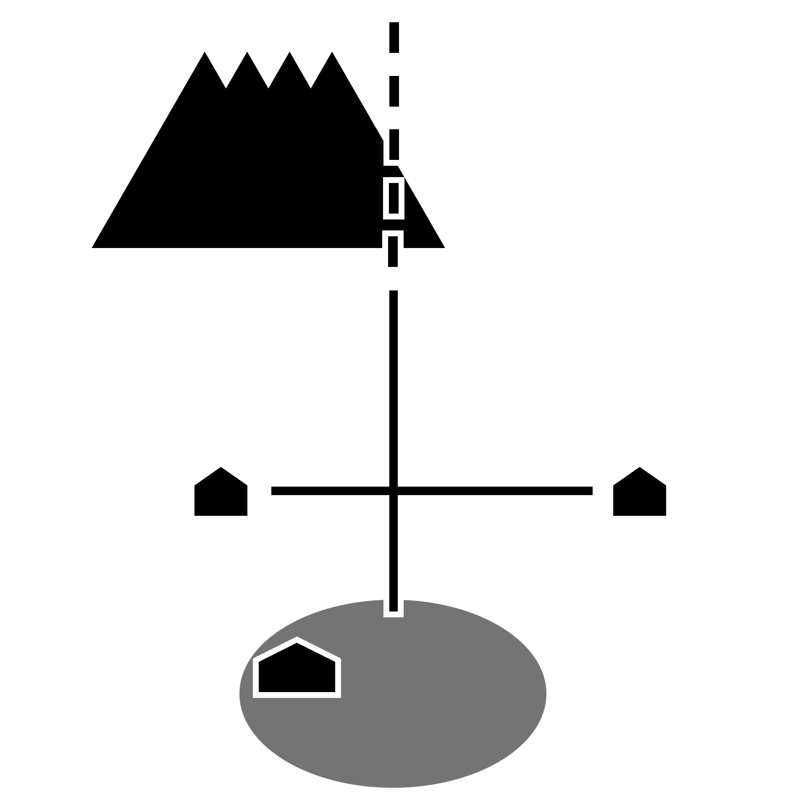
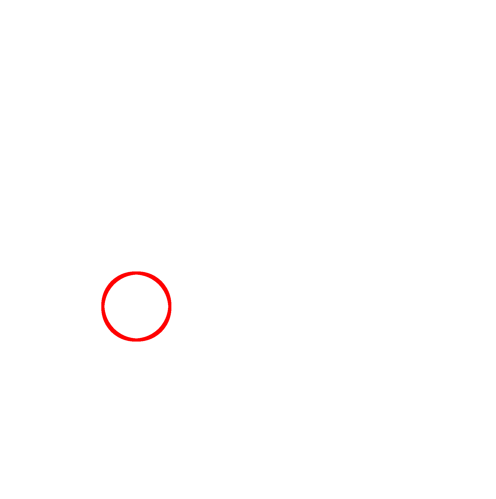

～災いの日～
夏期
チャオ県 太寧湾内 ロクボン島にて…
はじめに
栃野 圭は、小さな牧場をほそぼそと経営している牧人だ。
最近は、近くにあるロクボン火山の活動が活発になり、火山灰や火山弾が降ってくることもしばしば。
常に季節外れのどんよりした雲も立ち込めていて、まるで天変地異の始まりのようだ。
はじめに
ある日、役場が災害救済制度についてセミナーを開くという情報を聞きつけた。
ぜひ参加したいと準備をすすめ、当日、あとは行くばかりだが、一つ懸念がある。
ロクボン島は、ひょうたんのような形状で東西に分かれており、中央のくびれの部分に火山がある。
栃野がいるのは、東側の草原地帯。
役場は、西側の町にある。
なので、行き来には危険な火山のふもとを通り過ぎなければいけない。 トラブルなく無事にたどりつければいいが…。
自宅
ここは栃野の家。
古い木造の家で、窓からは外の草原や、海に浮かぶ島々が見える。
テーブルの上にはいろいろなものが置かれている。
隣の部屋には、足腰の弱った親がいる。
テーブル
テーブルの上には、[ 牛舎の鍵 ]が置いてある。あとで見回りに行くのもいいかもしれない。
他にも、生乳の冷却タンクの説明書や、乳業メーカーとの契約書などが置かれている。
テーブル
鍵をとった。
テーブル
テーブルの上には生乳の冷却タンクの説明書や、乳業メーカーとの契約書などが置かれている。
隣の部屋
老齢の親が、椅子に座ってお茶を飲みながら、ゆっくり外の景色を見ている。
壁には、いろいろな記念品が飾られている。
隣の部屋
「そろそろ役場に行ってくるよ」
「おう気をつけてな。魔物にも注意するんだよ。」
「魔物ねえ。人の通り道には現れないでしょう。」
「何が起こるかわからんよ。簡単でいいから、身を守るのと、攻撃するためのものをもっていくんだよ。
「そう、用心して行くよ。」
隣の部屋
壁には、家族や風景の写真が並んでかけられている。
隣の部屋
壁には、家族や風景の写真が並んでかけられているが、その中に、古い[ 円盾 ]が飾られている。
一対の鹿の角のデザインが大きく彫られている金属製の盾で、無数の傷がついている。
かつてここを治めていた、フィナ王の時代、栃野のご先祖が戦いのときに使っていたものだ。
おおげさではあるが、火山弾とかから身を守るのにも使えるかもしれない。
隣の部屋
円盾をとった。
十字路
ところどころ岩肌が見える草原の真ん中に、道が通っている。
目的地である西の町へ向かう道、栃野の牧場につながる道、アザラシ猟師の小屋、栃野の自宅へ、それぞれ向かう道がある。
猟師小屋
アザラシ猟はこのあたりで伝統的に行われている。
知り合いの漁師が、小屋の前で何か長い棒のようなものを洗っている。
猟師小屋
「やあ、猟の調子はどう？」
「おう栃野か。さいきんはめっきりさ。さっき岩場にぶつけて舟に穴もあけてしまったし、さんざんだ。」
「それは残念…。ところでその棒は何？」
「仕事道具だよ。これでアザラシの頭を割るんだ。あ、言っとくけど触るなよ、大事な商売道具だから。」
「触らないよ。まあ、お互い頑張ろう。」
「そうだな。」
栃野の牧場
策で囲まれた広い牧草地と、牛舎がある。
栃野の牧場だ。
いつもは乳牛を放牧させているが、危ないので今はみな牛舎の中だ。
たまに、こぶし大の火山弾が降ってくることもある。
牛舎
牛舎には鍵がかかっている。
自宅に鍵を忘れてきた…。
牛舎
牛舎の中には、十数匹の牛が繋がれている。
口をずっと動かしながら、のんきな目をしてこっちを見たり、あっちを見たりしている。
牛舎
牛舎の中には、十数匹の牛が繋がれている。
口をずっと動かしながら、のんきな目をしてこっちを見たり、あっちを見たりしている。
そばの壁に、[ ピッチフォーク ]が立てかけてある。長い柄と、その先端に広がった4本歯を持った農具だ。
普段は牧草を運ぶのに使っている。
杖がわりにでも持って行こうか。
牛舎
ピッチフォークをとった。
西へ進む道
道の先へ進むにつれ、足元に岩が目立つようになってきた。
火山の麓を通る道である。
舗装されて歩きやすいが、ところどころへこんだりひび割れたりして、荒れている。
しばらく歩いていると、道の両側は溶岩でできた崖になり、見通しが悪くなってきた。
魔物
突然、目の前に、その崖の上から、小石がばらばらと落ちてきた。
衝撃音を伴い、前方に土煙が立ち込める。
栃野は危険を感じ、歩みを止めて後ずさったが、その背後にも、岩が落ちてくる音がした。
閉じ込められてしまったかもしれない。
そう思った矢先、目の前に、崖から巨大な影が転げ落ちて、もう片側の崖に激突した。
魔物
それは、一見、巨大な岩の塊に見えたが、よく見ると動いている。
巨大なトカゲらしきものだ。栃野の身の丈の二倍はゆうに超える大きさだ。
背中から頭頂にかけて、ゴツゴツした鱗に覆われている。
しばらく、ここはどこだろうと顔をきょろきょろしていたが、
やがて栃野と目が合った。
戦い
巨大トカゲは、数秒の間、栃野から間合いをとって様子を伺っていたが、何を思ったか、栃野に向かってとびかかってきた！
身を守れる道具も何もない。足場は悪いが、逃げるしかない!
不運…
栃野はトカゲに背を向けて逃げようとしたが、岩につまづいて倒れてしまった。
気が立っているトカゲは、栃野をその巨体で踏みつけながら、容赦なく鋭いキバで噛みついた。
あまりの痛みに栃野は気を失い、そのまま目覚めることはなかった…。
[ Bad End (1/4) ]
戦い
巨大トカゲは、数秒の間、栃野から間合いをとって様子を伺っていたが、何を思ったか、栃野に向かってとびかかってきた！
足場は悪く、逃げるのは難しい。
栃野は、身を低くして盾を構えた。
戦い
巨大トカゲの頭が円盾にぶつかる。
栃野は強い衝撃を受け、円盾もおおきく凹んでしまったが、トカゲも不意に攻撃を防がれて、面食らったようだ。
上体を起こし、後ろ足で立って体をのけぞらせた。
栃野は、そのトカゲの胸元が、赤く脈打つように輝いているのをみつけた。
あそこだけ皮膚も薄くなっている。
弱点に違いない。
しかし攻撃手段を持っていない。一体全体どうしたものだろう。
そう躊躇している間に、トカゲは再び栃野に標的を定めた。
不運…
目と目があったその一瞬の後、栃野はその巨体で、上から踏みつけられた。
盾がつぶれ、自身の骨が折れる音がした。
あまりの痛みに栃野は気を失い、そのまま目覚めることはなかった…。
[ Bad End (2/4) ]
戦い
巨大トカゲは、数秒の間、栃野から間合いをとって様子を伺っていたが、何を思ったか、栃野に向かってとびかかってきた！
足場は悪く、逃げるのは難しい。
栃野は、意を決してピッチフォークを握りしめた。
ピッチフォークの歯は細くとがっているが、このトカゲの分厚い鱗を貫けるほど鋭くはないだろう。
すると、この柄の長さを生かして…。
戦い
ピッチフォークを大きく振りかざし、突進してくる巨大トカゲの頭に叩きつけた。
一瞬、意表を突かれた攻撃にトカゲの動きが止まったが、こんな攻撃は脅威ではないというように、再び、今度は至近距離から、突進をはじめた。
まずい、身を守る道具を何も持っていない。
不運…
栃野がピッチフォークを構えなおす前に、巨大トカゲが頭突きをかました。
体勢を崩し、ピッチフォークも手から離れ、無防備になった栃野に、トカゲは容赦なく噛みついた。
あまりの痛みに栃野は気を失い、そのまま目覚めることはなかった…。
[ Bad End (3/4) ]
戦い
巨大トカゲは、数秒の間、栃野から間合いをとって様子を伺っていたが、何を思ったか、栃野に向かってとびかかってきた！
足場は悪く、逃げるのは難しい。
幸いにも、身を守る円盾と、攻撃できるピッチフォークをもっている。
ただ、ピッチフォークの歯は細くとがっているが、このトカゲの分厚い鱗を貫けるほど鋭くはないだろう。
まずは身を守り、様子をうかがうとしよう。
戦い
巨大トカゲの頭が円盾にぶつかる。
栃野は強い衝撃を受け、円盾もおおきく凹んでしまったが、トカゲも不意に攻撃を防がれて、面食らったようだ。
上体を起こし、後ろ足で立って体をのけぞらせた。
栃野は、そのトカゲの胸元が、赤く脈打つように輝いているのをみつけた。
あそこだけ皮膚が薄い。トカゲの弱点だと直感した。
ピッチフォークのリーチの長さは十分だ。
戦い
いちかばちか、栃野はピッチフォークを構え、大きく前に踏み込んで、トカゲの胸に突き刺した。
トカゲは上を向いて叫び声をあげ、足元をふらつかせ、胸の輝きも、急に強くなったり弱くなったりと、不規則に点滅し始めた。
栃野はピッチフォークを引き抜いて、後ろに数歩下がった。
、トカゲは、胸から赤黒い液体を吹き出しながらバッタリと前に倒れ伏した。
トカゲの撃退
トカゲは突っ伏したまま、呼吸も乱れ、視線だけを栃野に向けている。
先ほどまで命を奪われかけていた身であるが、栃野は、その瞳が、不思議な悲しさを帯びているように感じた。
十分な距離を取りながらその瞳を見つめ返していると、
道の反対側から物音がした。
人の足音だ。
土煙の中から姿をあらわしたのは、十名ほどの兵士たちだった。
トカゲの撃退
全員、金属製のヘルメットや防護盾を装備しており、小火器やスコップなどを持っている人もいる。
リーダー格と思しき、先頭を歩いてきた人は栃野に気づき、次に、足元の巨大トカゲに気づいた。
栃野を手で制止し、
「ちょっと、そこの人、止まってて。」
と言い、
次に、後ろの仲間に振り返って、トカゲを指差して、
「ターゲットだ。ぐったりしている。生け捕りにしよう。」
と指示を出した。
トカゲの撃退
後ろの仲間たちがトカゲを囲んで捕獲作業をしている間、先頭の人は防護盾を足元におろして、栃野に近づいて挨拶をしてきた。
「こんにちは、私は太寧湾内災害対策局の出水と申します。怪我はないですか？」
「怪我は…特にないですが、大変な目にはあいました。」
トカゲの撃退
出水は、へこんだ円盾や、ピッチフォークの先端を見て、状況を察した。
「…そのようですね。いくつか、質問させてもらっても？」
栃野はトカゲとの遭遇から、今に至る流れを話した。
「…なるほど。しかしずいぶんと勇敢な方だ。私も見習わないとな。」
「いやいや、運が良かっただけですよ。」
出水と栃野は笑い合った。
トカゲの撃退
「あっ、そういえば、話を聞くあたり、西の町に行こうとしていたのではなかったですか？」
「そうでした、すっかり忘れていた。火山で牧場が被害を受けてしまって。それで、役場の救済制度のセミナーに参加しようと思っていたのですが。」
栃野がそう言うと、出水は首をかしげた。
「役場のセミナー？ここ数日は、役場は開いていないですが…。」
栃野は驚いた。今日のこの騒動は、無駄な苦労だったのか。
「そうなんですか？」
トカゲの撃退
「ええ、ああいうのが出てきたので、戒厳令が敷かれていて、役場は普段の業務をやってないんですよ。」
出水はトカゲの方に振り返った。
もうすでに、その巨体は大きい袋や厚いシートに覆われ、ところどころ太い縄で縛られている所だった。
トカゲの撃退
出水は栃野に向き直った。
「でもご安心を。戒厳令はじきに解除されるでしょうし、牧場の被害も、きっとこれ以上大きくはならないはずですよ。」
「どういうことですか？」
「実は今回の火山活動は、あいつが地中で暴れたことが原因なんです。地上に出てきたところを捕獲できたので、今後は、火山もすっかり落ち着くと思いますよ。」
おわり
…
……
その後、栃野は、出水らに別れを告げ、東に戻った。
実際、その日から火山は何事もなかったかのように静まり返った。
後日、役場からいくばくかの補助金も受け取り、牧場も修繕することができた。
あのトカゲがその後どうなったのかは、結局よくわからなかったが、栃野のもとには平穏な日常が戻ってきた。
[ Good End (4/4)]
アイテム
特に何も持っていません

ミニマップ


設定
一つ戻る
最初から始める
カラーテーマ
セーブ
現在のセーブデータ
キー①： ／ キー②： ／ キー③：
現在のゲーム進行を保存したいとき、上の3種類のキーを覚えていてください。下のフォームに入力し、送信ボタンを押すと、データがロードされます。※キーワードは半角英数で書いてください。
データのロード
竹馬浬 2025.4; Story-Number=25_4.39.Cx.M1.栃